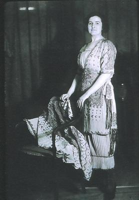
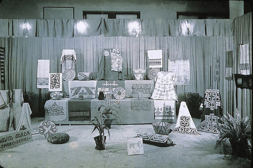

| |
 |
|
Fig 1: M.D.C. Crawford,
“Museum Documents and Modern Costumes,” The American
Museum Journal 18, no.4 1918.
|
The idea of an “American” design gained
momentum in segments of the business, museum and design world during
the 1910s and 1920s.1 Self-conscious interest in the
design arts as independent of outside influences is traceable to
the origins of the United States as a nation at the expense of England.2
This feeling intensified hand in hand with industrial expansion,
a pace that quickened in the early twentieth century. With shortages
in European design models brought about by World War I, the need
to rely more upon local resources for inspiration, materials and
manufacturing - to take nothing away from genuine national sentiment
- forced the question of identity. Museums were important in this
context.3 From the east coast to the mid west in Chicago,
Cincinnati, Newark, New York City and Philadelphia, museums actively
promoted their holdings as springboards for American design, strengthening
bonds or forging new ones with the business community, which took
advantage of policies that opened up collections through study rooms,
exhibitions and educational programs.
Since revolutionary colonists wore homespun, design as American
has been intertwined with women’s clothing.4 The
early twentieth-century quest for a national design was replicated
in fashion as ties with Paris, which held dominance, eroded due
to the war. Similarly intent on defining something American, leaders
in the feminine apparel industry in New York and New Jersey focused
on New York museums for the designing of garments, trim, fabrics
and accessories. Today the view about an emerging American fashion
centers on the styles of New York manufacturers and designers, but
a fundamental achievement was to generate and carry out an idea
about a national style, a development more widespread than New York.
The use of American Indian collections has a history of its own
worth studying for what it reveals about the nature of American
fashion as well as national identity, during a time when Euro-Americans
increasingly identified with indigenous peoples as true Americans.
Conceptualizing American Fashion
An American fashion was defined from the combined perspective of
the business and museum world in the main articulated by M.D.C.
Crawford, who bridged both domains. Crawford was a design and research
editor for the garment industry’s influential trade paper,
Women’s Wear, and a research associate in textiles at the American
Museum of Natural History in which capacities he established an
alliance between the museum and the garment and textile trades.5
By 1917 he had orchestrated the founding of study rooms, lectures
and workshops at the museum to the enthusiasm of leading manufacturers
and designers, among them from the garment business were Max Meyer
of A. Beller & Co., Jessie Franklin Turner of Bonwit Teller,
Edward L. Mayer, J. Rapoport, Mary Walls of John Wanamaker's and
E. J. Wile; and from the cotton and silk industry were Belding Brothers,
Cheney Silk, H. R. Mallinson and Johnson, Cowden & Company.
Crawford worked in close partnership with Stewart Culin, curator
of “ethnography” at the Brooklyn Museum.6 Under
Culin’s leadership the museum opened a study room in 1918 and
initiated outreach and programming for the design community, especially
in clothing and textiles. For his part Richard Bach at the Metropolitan
Museum of Art embraced the wide scope of design.7 Rather,
Crawford and Culin set the pace in Americanizing fashion.
Through his writing Crawford became an important spokesperson for
the fashion and museum world, positing ideas mostly in connection
with his institution and its nonwestern holdings, but which mirrored
the thinking of museums around the country with their various strands
of western and nonwestern objects. This makes clear that fashion
gained an American identity by originating in the United States
in terms of concept, materials and manufacture. Crawford reveals
the intent to create a modern American fashion through an international
collection that embraced Africa, the Americas, Asia, the middle
East, Europe and the Pacific islands. In a 1917 article in the journal
of the American Museum of Natural History, he describes how ready-to-wear
and silk and cotton manufacturers looked to the museum for direction,
stating that the “Primitive” American art collection and
the art of China, the Philippines and South Sea Islands would “...serve
as a basis for our own distinctive decorative arts.”8
A 1918 article in the same journal entitled “Museum Documents
and Modern Costume” explains that:
Instead of the usual method of importing modern
foreign costumes [themselves based, generally, on foreign museum
collections], our designers, familiar with the practical needs
of today, have gone direct to original documents for their inspiration.
The work, therefore, marks one of the most important movements
in the development of a truly American type of industrial art…9
|  |
|
Fig
2: Harry Collins installation at 1919 exhibition at the
American Museum of Natural History showing original designs
and garments derived from them.
Herbert J. Spinden, “Creating a National Art,” The
American Museum Journal 19, no.6, Dec. 1919.
|
The reference to “industrial art” and
“modern costume” indicates key aspects in the contemporary
understanding of American fashion. The first is advanced technology.
The national identity was entwined with the machine. To be an American
design was to be produced in American factories with American manufactured
materials. Technology was in turn equated with the modern. Although
popularly speaking the term “modern” also meant contemporary,
the machine represented up-to-date manufacturing methods, and designs
intended for industrial production were modern for this reason.
The fact is that handicrafts retained importance, but the emphasis
was on design for manufacture.10 It is not coincidental
that most garment and textile producers and designers interacting
with the American Museum of Natural History and the Brooklyn Museum
were engaged in quantity production.
It is tempting to apply to design the tendency of 1910s and 1920s
American artists to borrow from Native American and African forms
in pursuit of modern solutions to aesthetic problems - read abstraction.11
Although individual designers and manufacturers may have been caught
up in being modern, it would be misleading to apply the same agenda
to design. Fueled by economic motives, the first objective of design
is commerce and thus very different from the undertaking of artists.
Taken together the proximity of “ethnographic” collections
and the nurturing environment provided by Culin and Crawford cultivated
an interest in art outside of western traditions. But this was offset
by the utilization of European art at both the Brooklyn Museum and
Metropolitan Museum of Art.
What use there was of nonwestern art in modern terms pertained largely
to the market appeal of up-to-date styles. This is clear in fashion
discourse that alludes to abstraction. “Blouses of Modern American
construction. In the popular blouses of today, emphasis is laid
on harmonious colors and on designs that have been refined to the
point of simplicity,” highlighted designs recalling Northwest
Coast traditions.12
American Fashion Indian Style
The impact of Native American art on fashion is discernible in drawings
and garments that survive in illustrations in Crawford’s articles,
especially in Women’s Wear, and installation photographs from
museums, galleries and department stores along with the evidence
of exhibition catalogs and the fashion press.13 Even
a sampling provides a sense of how American Indian traditions were
incorporated. A starting point is Crawford’s 1918 article mentioned
above. It examines the results of a three-year campaign conducted
by Women’s Wear in league with the American Museum of Natural
History in order to improve textile and garment design.14
Representing “…the first fruits of what I may term `creative
research’ by the American costume industry,” the article
contains four designs associated with Native American traditions,
namely a silk fabric inspired by pottery from the “American
Southwest” (Edward L. Mayer); a sport coat with embroidery
based on “primitive” basketry (A. Beller) (Figure 1);
and under the caption “Designs suggested by Indian Documents”
:
At the left a dinner gown, or negligee, embroidered
in wool. The method of connecting the ends of the belt was suggested
by girdles from the Goajiro Indians in the museum’s collections
from northern Columbia, and the decoration was inspired by a study
of North American Indian collections (Bonwit Teller).
At the right. A black satin evening gown with
silken and bead tassels. The idea of the tassels owes its origin
to the buckskin thongs that hang from a Dakota Indian costume
(Edward L. Mayer).
A milestone in this history involves thirtyfour
displays of dress and accessories shown in the "Exhibition
of Industrial Art in Textiles and Costumes" at The American
Museum of Natural History in November, 1919. The catalog together
with an article in the Museum Journal entitled, “Creating a
National Art”, written by Herbert J. Spinden, Assistant Curator,
Department of Anthropology, indicates the goal of achieving a modern
American design through the global collections housed in the museum.15
Held in the “North American Indian Hall”, the exhibition
included gowns in style and trim inspired by designs from Guatemala
by J. Wise & Co., and from the Plains by Harry Collins (Figures
2). Two blouses by B.C. Faulkner suggest the patterns and styles
associated with the Northwest Coast and Plains Indians shirts. David
Aaron & Co., a manufacturer of embroidery, drew on a variety
of sources such as Pueblan in an effort to demonstrate the use of
art from around the globe “in modern machine-made embroidery”
(Figure 3). Similarly The American Bead Company borrowed from Woodlands
traditions in order to produce “Modern uses of Beads in Dress
Accessories”.
|  |
|
Fig
3: The Brooklyn Standard Union, November 10, 1919.
|
Overall the Native American influence derives from
baskets, pottery and textiles associated with the northern hemisphere
(Northwest Coast, Southwest and Woodlands cultures). As for garments
shirts prove to be the most significant in keeping with designs
from both continents. From these, color, patterns, motifs and materials
were adapted in the designing of trim and ornamentation for staples
like dresses, suits, coats, blouses and lingerie, and for dress
fabrics and accessories. There is a constant dialogue with the prevailing
Parisian line, but also departures that would be more extensive
if more were extant. It is surprising how closely the dresses by
Harry Collins resemble the original Plains Indian garment (Figure
4). Crawford’s 1918 article describes something similar in
an “...automobile wrap in pongee silk, practically an exact
copy of a Korean grass linen garment."16 A 1926
article in the bulletin of The Metropolitan Museum of Art states:
Thus we know of the costume designer who spent
her time at the Museum seated alone in a gallery of Near Eastern
art. She made no notes, she went to no other galleries, she simply
‘exposed’ herself to the influence of graceful line
and gentle color, knowing her own receptivity to such effects.
The result was a whole series of models recalling in form nothing
she had seen at the Museum, yet subtly registering in color key
and in certain treatments of line the effect of the ‘exposure.’17
|
|
Fig
4: David Aaron & Co. installation at 1919 exhibition
at the American Museum of Natural History showing museum and
modern designs.
Herbert J. Spinden, “Creating a National Art,” The
American Museum Journal 19, no.6, Dec. 1919.
|
The fashion press reveals that the museum’s
impact on blouses was not limited to the designing of trim and ornamentation,
but dictated the line of silhouettes, hems, necks and sleeves. Because
it was then crucial to a woman’s wardrobe, the history of the
blouse is doubly important in the Americanization of fashion. In
fall, 1919 Women’s Wear galleries showcased “blouses”
from around the world donated by the American Museum of Natural
History and the Brooklyn Museum in which Native American examples
were prominent.18 The exhibition generated a lot of attention
in the trade. Within weeks Women’s Wear depicted garments that
grew out of it, including a blouse “fashioned after a garment
of the Plains Indians made of elk skin and brilliantly trimmed with
quill work.”19 The excitement sparked a buyer and
designer for Abraham and Strauss department store in Brooklyn to
develop a line of blouses, which were advertised in local newspapers
and prominently mounted in a window along with the originals: one
depended on the culture of the Plains and another on the Huichol
Indians of Northern Mexico.20 These adaptations show
how closely the original garments were followed (Figure 5).
In the end it is easy to call the search for an American fashion
a success from the standpoint of the New York museum group in the
terms it set for itself, at least partially. The intention was to
utilize the country’s potential in materials, manufacturing
and design for which an abundance of evidence survives in the fashion
and museum press. In retrospect the adoption of nonwestern art was
not new in fashion, but traceable to France prior to the war.21
However, as developed in New York beginning in 1917, this tendency
was rooted in this country with a mindset directed toward local
museums and based at times on indigenous sources.
Research needs to be done in order to determine how other garment
areas such as Cleveland and Chicago responded to the institutional
support of museums and to New York as a style center. As of now
costume historians who judge the Americanness of the 1910s and 1920s
focus on style and a handful of figures in the thriving garment
center of New York City.22 Histories are waiting to be
told elsewhere that promise to yield a variety in American fashion
under the direction of museums. The Sears catalog, for example,
sold blouses reminiscent of Plains Indians shirts and bathrobes
inspired by Pueblan textiles to women across the country from 1918
through the 1920s.23
|
|
Fig
5: Model with J. Wise and Co. and original design of the
Huipil from Guatemala in connection with 1919 exhibition at
the American Museum of Natural History.
Herbert J. Spinden, “Creating a National Art,” The
American Museum Journal 19, no.6, Dec. 1919.
|
Unfortunately the very nature of utilizing museum
collections carries with it the danger of designing costume, a fault
of some of the era’s better fashions.24 The recycling
of history, a commonplace of fashion, walks a narrow line between
the poles of “dress up” and “dressed up” and
perhaps it is for the best that these American fashions incline
more toward fabric, trim and color than overall design in the elaboration
of styles from the past.
Dressing Up Indian
What strikes me about the fashionable wearing of Native American
styles is the concurrent practice of dressing up as Indians in order
to cultivate an American womanhood. In Playing Indian Philip J.
Deloria maps a history of Euro-American men donning feathers, blankets
and face paint in activities hinged upon finding a national self.25
While persisting from colonists who threw tea into Boston harbor,
to nineteenth-century aspiring national poets and Woodcraft Indians
to the men’s movement, more recently, it wasn’t until
the early 20th century that playing Indian became solidly entrenched
among women and when it did it was in terms of the Campfire Girls.
Stemming from the late 19th century this organization took hold
in the 1910s, borrowing from Ernest Thompson Seton’s Woodcraft
Indians, which stressed Indianness as a key part of American manhood.
With values rooted in nature and physical work Seton sought to bolster
masculinity in city boys feminized by industrialization. Campfire
Girls, under the guidance of Luther and Charlotte Gulick, aimed
at shaping ideals of American femininity in linkage with Native
American women and their tie with nature, motherhood and domesticity.
As a way to emphasize this affinity, the membership made and wore
clothes in imitation of their models. Deloria puts the incorporation
of women into the tradition of playing Indian into a larger picture
entwined with national identity in line with “…modernity,
which has used Indian play to encounter the authentic amidst the
anxiety of urban industrial and postindustrial life.”26
Although recognized as American and invoked to prove
the existence of a national style, self definition through American
Indians did not belong in the main to the fashion world’s program.
Things Native American were not singled out in the museum collections
and thus cannot be counted as part of an identity quest via indigenous
peoples. The latter then preoccupied many white Americans, especially
after the war, coupled with a novel appreciation for American Indian
culture, which is where fashion enters the picture.27
Even though in general the fashion discourse is stereotypical and
ethnocentric, it expresses genuine interest in the aesthetic value
contained in Native American cultural forms, and recognizes therein
art rather than ethnography in step with the new thinking. Just
compare “Primitive American art collection” and “Made
in slate gray Georgette crepe, the wide bands incorporate all the
exquisite color sense of men who looked to Nature for all their
colorings.”
Rather than an antidote to industrial angst, the
adoption of Native American forms can be linked to a celebration
of machine technology and to the related question of Americanness,
a situation addressed in 1919 by Crawford:
The exhibit in the Mallinson booth is in every
detail essentially American. The silks have been woven and printed
in the eight Mallinson mills in America, the designs have been
created right here in America, and in many instances were inspired
by American sources. In practically all instances, the designers,
themselves American, have studied, dreamed and originated in American
atmosphere.28
The stress on technology and Americanness
in design in general is understandable as a way to offset the economic
crisis brought about by the war and to bolster industry, which had
a positive influence in advancing the profession of designer, even
as it outdistanced handicrafts and created problems for labor.29
The striving in fashion to make something distinctly American produced
in number offered a needed alternative to the stratified world that
the Parisian couture represented, despite the fact that differences
in cost and status remained. But the mark was missed in not paying
more attention to the conditions of the users and not following
through to the fullest, when in the mid 1920s eyes turned again
toward Paris.
What about the women outside of the Campfire Girls who knowingly
wore fashionable items indebted to Native American culture? Is this
an attempt to identify with Indians as Americans, a phase in the
construction of American femininity, a stance against Paris, or
a fashion expression? Are the four mutually exclusive? I will follow
the lead of Deloria in recognizing a paradoxical relationship concerning
national identity, American Indians and fashion design to end with
the mental image of white girls at play dressed up like “Indian
braves”.30
Notes>>
Author's Bio>>
|
|